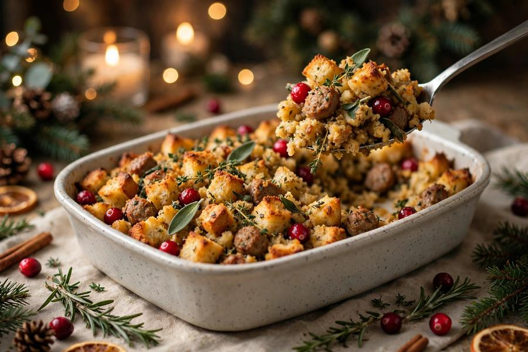

Christmas Stuffing Recipes
📌 Save to Pinterest
Christmas stuffing is the side dish that quietly steals the show: golden and crisp on top, soft and savory underneath, and the first thing people reach for after the main dish. This roundup gathers twelve ways to make it — classic bread stuffings, sausage versions, and bolder flavors for cooks who want something different this year. Pick the one that fits your table, your main dish, and the way you like to cook.
How to pick the right stuffing
Stuffing starts with bread — day-old bread works best, because it soaks up broth without turning to mush. A classic stuffing is bread, onion, celery, herbs, and butter, bound with broth and baked until golden. Cook it in a baking dish if you want a crisp top, or inside the bird if your family always has it that way — just remember that stuffing cooked inside a turkey needs to reach a safe temperature all the way through, so use a food thermometer and check the center. Buy by the headcount: a generous scoop or two per person, with a little extra, because stuffing is the dish people always come back for. Let it rest a few minutes before serving so it sets and slices neatly.
Good to know: Everything is written in American English, and measurements use US customary units — cups, tablespoons, and Fahrenheit — for cooks in the United States. Always use a food thermometer to confirm stuffing cooked inside a bird is heated through, and follow safe food-handling guidance.
Classic stuffings
These are the stuffings most people picture when they think of Christmas dinner: buttery bread, sage, and a crisp golden top.
1. Classic Bread Stuffing
The classic. Toasted bread cubes, onion, celery, sage, and butter, moistened with broth and baked until the top is golden and crisp. It is the stuffing to make when you want the table to taste exactly like Christmas. Serve it alongside turkey, ham, or prime rib — it goes with all of them.
2. Traditional Sage Stuffing
Sage is the flavor of Christmas stuffing, and this version lets it lead: plenty of fresh sage with thyme and parsley, folded through buttery bread. The herbs stay bright and the stuffing tastes clean and savory rather than heavy. This is a good pick if your table also has rich sides — the sage keeps the stuffing from tasting one-note.
3. Cornbread Stuffing
Cornbread gives stuffing a sweeter, crumblier texture than white bread, and it is a Southern tradition for a reason. The cornbread soaks up broth and turns tender inside while the top stays crisp. It pairs beautifully with ham and turkey alike, and it is the stuffing to make when you want something a little different from the usual.
4. Herb and Butter Stuffing
Butter is the whole point of this one: browned butter tossed through the bread with mixed herbs, so every bite tastes rich and savory. The butter browns the top beautifully and keeps the inside moist. This is the richest of the classic stuffings — serve it with lighter sides so the table stays balanced.
Sausage and savory stuffings
Sausage turns stuffing into a heartier dish — almost a main in its own right — and these three are the ones to try.
5. Sausage and Herb Stuffing
Browned sausage folded through the bread with sage and thyme makes a stuffing that is savory, rich, and satisfying. The sausage fat flavors the whole dish, so the stuffing needs very little else. It is the stuffing to make when the main dish is on the lighter side and the table needs something hearty.
6. Cranberry Sausage Stuffing
Cranberries and sausage are a natural pair: the sausage brings salt and richness, the cranberries bring tartness and color. Dried cranberries work best — they soften in the broth without making the stuffing wet. This is the stuffing for a festive table, and it looks as good as it tastes.
7. Apple and Sausage Stuffing
Diced apples cooked with the sausage add sweetness and a soft texture that balances the savory meat. The apples nearly melt into the bread, leaving a gentle sweetness in every bite. It is a good pick for a table with kids — the sweet-savory mix tends to win them over.
Bold and different stuffings
For tables that want a stuffing with more personality — nutty, tart, earthy, or easy to serve — these five are the ones to try.
8. Chestnut Stuffing
Roasted chestnuts give stuffing a sweet, nutty flavor and a soft, almost creamy texture. It is an old-fashioned Christmas flavor that feels special without being fussy. Use it when the rest of the menu is simple and you want the stuffing to be the dish people talk about.
9. Cranberry and Orange Stuffing
Cranberries and orange zest make the brightest stuffing in this roundup: tart, citrusy, and ruby-red in places. The orange keeps the cranberries from tasting too sharp, and the whole dish smells like the holidays. It pairs well with rich mains like prime rib and ham, where a tart side cuts through the fat.
10. Mushroom and Leek Stuffing
Earthy mushrooms and sweet leeks cooked down with herbs give this stuffing a deep, savory flavor that is completely different from the classic. It is the best choice for a vegetarian guest at the table, and it is wonderful with a vegetarian main or alongside a roast.
11. Stuffing Balls
Instead of a baking dish, the stuffing is rolled into balls and baked until crisp all over — easy to serve, easy to grab, and a hit with kids. They reheat beautifully, so they are a good make-ahead option. Serve them in a basket lined with a cloth, straight from the oven.
12. Vegetarian Stuffing
No sausage, no meat broth — just bread, vegetables, herbs, and vegetable broth, baked until golden. It proves that stuffing does not need meat to be rich and satisfying. Serve it with a vegetarian main, or make a second dish of it so every guest at the table has stuffing to enjoy.
What to serve with stuffing
Stuffing is a side dish, so it needs a main: turkey, ham, or prime rib are the classics, and it goes with all three. Around it, the best partners are the ones that balance its richness: something green (green beans or Brussels sprouts), something tart (cranberry sauce), something creamy (mashed potatoes or a potato gratin), and something sweet (candied yams or roasted sweet potatoes). A small bowl of good gravy on the table covers the guests who want their stuffing extra moist. Keep the sides simple — the stuffing is the dish people remember, and the table should let it shine.
What to do with leftover stuffing
Leftover stuffing is one of the best parts of Christmas dinner. Reheat it in the oven so the top crisps up again, press it into patties and fry them for breakfast with eggs, stir it into soup as a thickener, or use it to fill a sandwich with leftover turkey and cranberry sauce. Store leftover stuffing in the refrigerator and use it within a few days; freeze what you cannot use, in portions, so it thaws quickly later.
Keep exploring
- Browse the Lunch & Dinner roundups — mains for midday and evening tables.
- Browse all six categories — breakfast, lunch and dinner, desserts, air fryer, healthy recipes, and appetizers.
- More about the kitchen — what The Tasty Recipe Co is and how it works.
About the Editorial Team: This article was created by the editorial team behind The Tasty Recipe Co. The site publishes recipe roundups for home cooks, one at a time, with each article checked live before the next one begins. Learn more on our About page.
Recipe results can vary with ingredients, equipment, and technique. See our Disclaimer for food-safety and allergy notes.